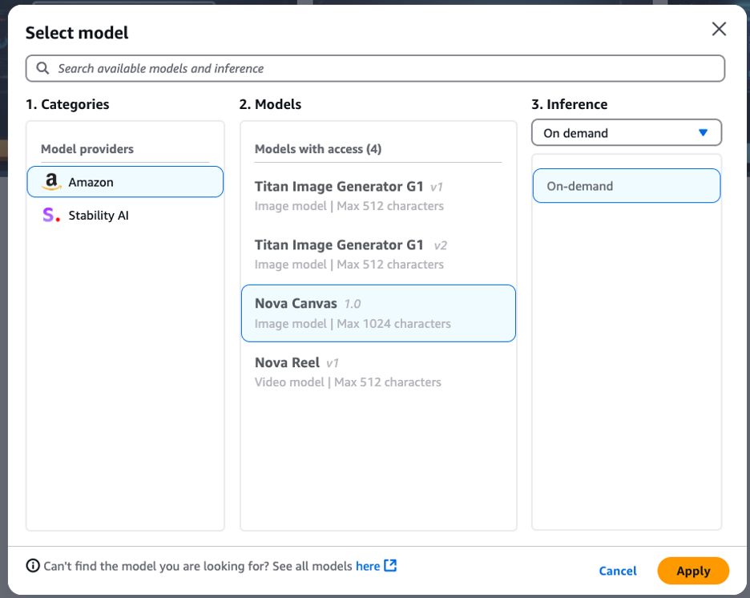
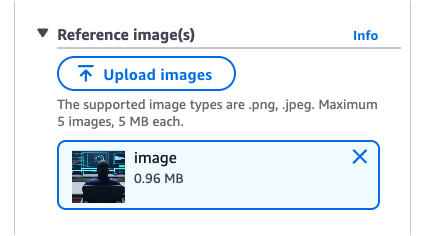

Automation News!
Welcome to Automation News with Cloud Coach Errio! Stay informed about the latest in cloud innovation, AI certification tips, and how professionals across industries can leverage AWS for success.
The 1-2 Nova Punch! Making Your Images Come Alive with Amazon's Generative AI
In today's fast-paced digital world, creating engaging visual content is crucial for businesses to stand out. Amazon's suite of generative AI tools offers a powerful solution to streamline your content creation process. In this article, we'll explore the dynamic duo of Nova Canvas and Nova Reel, demonstrating how you can create stunning images and transform them into captivating videos in just a few simple steps. Get ready for the 1-2 Nova Punch that will revolutionize your visual content strategy!
Part 1: Crafting Eye-Catching Images with Nova Canvas
Before we dive into video generation, let's start by creating a compelling image using Amazon's Nova Canvas. This AI-powered design tool allows you to create professional-quality graphics with ease.
Step 1:
Access Nova Canvas by navigating to the "image/video" playground in Amazon Bedrock and select Amazon Nova Canvas model (Be sure that you have requested access to the model prior).
Step 2:
Choose your model output configurations and type a prompt. Here is an example:
"Create an image of a digital technical instructor at the computer creating with generative ai."
I only liked one of the photos the model gave me as an output. I wanted the model to get closer to what I was looking for, so I used a "reference image" with the one I liked most. I did this by selecting the menu button on the image I liked in the output section and then choosing "generate variations".
I ran that prompt again and the output from that prompt is below, generated with the reference image.
I liked the last image best on the far right best!
Step 3:
Download the image, change your model to Amazon Reel, upload the image to the "reference image" section of the configuration panel for the model's output, and apply your prompt.
"Create a video of the person in the chair analyzing the data on the computer screens."
The output is below!
Part 2: The 1-2 Nova Punch: Maximizing Impact
1. Nova Canvas allows you to quickly create professional, eye-catching images tailored to your brand and message.
2. Nova Reel takes those images and transforms them into engaging videos, adding motion and dynamism to your visual content.
This powerful combination enables you to:
- Maintain consistency across your static and video content
- Repurpose existing designs into multiple formats
- Rapidly produce high-quality visual assets for various platforms
- Experiment with different visual styles and messages without extensive resource investment
Conclusion:
The combination of Amazon Nova Canvas and Nova Reel offers a game-changing approach to visual content creation. This 1-2 punch of generative AI tools empowers businesses to produce high-quality, engaging visual content at scale, without the need for extensive design or video editing expertise.
By leveraging these powerful AWS services, you can streamline your content creation workflow, maintain brand consistency across various media formats, and rapidly adapt to changing market trends and audience preferences. Embrace the power of Nova Canvas and Nova Reel to unlock new possibilities in your visual storytelling and take your digital content strategy to the next level.
Are you ready to revolutionize your content creation process? Dive into the world of Amazon's generative AI tools with Amazon Bedrock and watch your ideas come to life like never before!